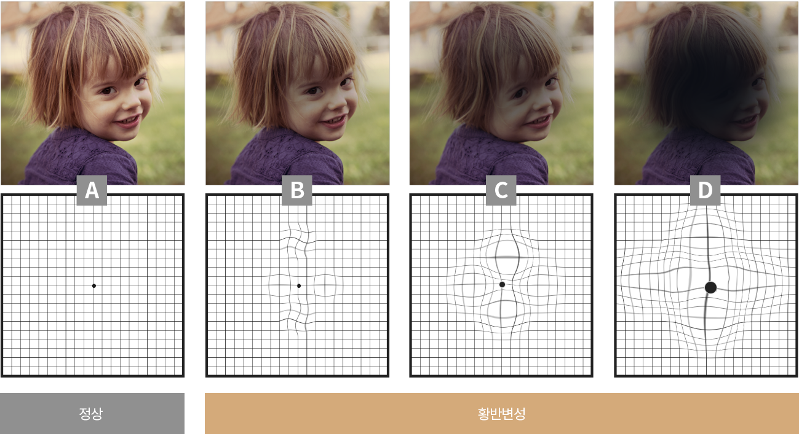
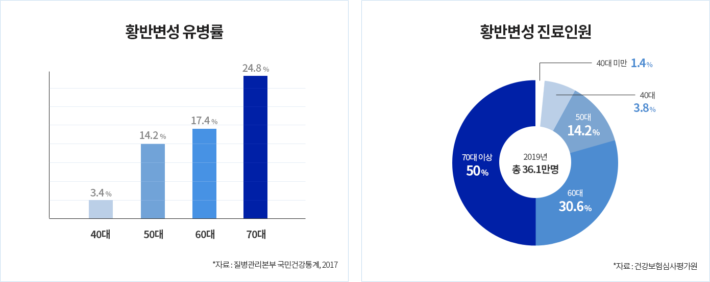
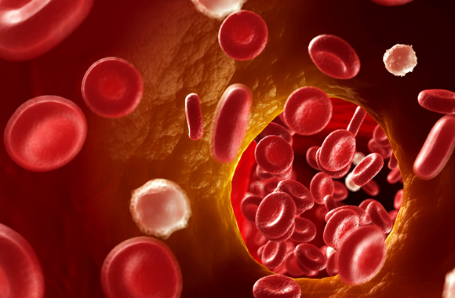
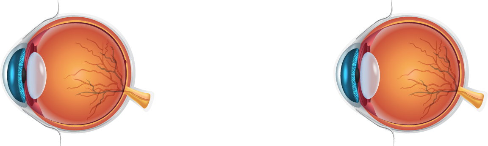

황반변성
실명을 유발하는 3대질환은
정기적인 검진이 중요합니다
망막의 가장 중심부에 위치한 황반에 변성이 오는 질환
황반변성은 별병 후 수개월에서 2-3년 사이에 실명을 초래하는 실명질환
입니다.
초기 증상이 노안과 비슷하기 때문에 노화가 시작되는 40~50대 이상은
반드시 1년에 한번씩 망막검사(안저검사)를 받아보아야 합니다.

*황반변성이 진행되면 처음에는 선이 굽게 보이다가 점차 사물의 중심이
까맣거나 빈 것처럼 보입니다.
‘실명원인 1위 황반변성’ 조기검진 중요

황반변성 원인
황반변성은 주로 노인에게 나타나며
당뇨와 함께 노인성 실명의
주된 원인이 됩니다. 황반변성이 발생하면 증상을 비정상적인
혈관이 생성되어 질병 진행으로 이어지는데 그 원인은 노화,
고열량 식습관, 스트레스, 고혈압, 비만, 혈중 콜레스테롤 상승,
심혈관계 질환, 가족력 등을 원인으로 꼽을 수 있습니다.

황반변성 증상
황반변성 초기에는 환자 스스로 뚜렷한 이상을 찾기 어려우나
컨디션이 좋지 못한 날에는 시력이 떨어지고 컨디션이 좋으면
시력이 다시 회복됩니다.
조금 진행하면 부엌이나 욕실의 타일,
건물 등의 선이 물결치듯 굽어 보이는 변형시를 경험하게 되며 더
진행하면 사물의 중심이 까맣게 보이지 않아 글자의 공백이
생기거나 중심 부분이 지워진 듯 보이지 않게 됩니다. 특히
황반변성이 한쪽 눈에 먼저 발병한 경우에는 반대쪽 눈을 사용해
이상을 느끼지 못할 수 있음으로 각별히 주의해야 합니다.
나이관련 황반변성
황반은 눈 안쪽 망막의 가장 중심부로, 물체의 상이 맺히고 대부분의
시세포들이 몰려있기 때문에 시력에 중요한 역할을 합니다.
노화나 유전적인 요인 등 여러 원인에 의해 황반부가 손상되고 시력 장애가
생기는 질환이 황반변성입니다.
50대 이상 실명원인 1위
시세포 노화 증상

건성 황반변성(비삼출성)
황반변성 환자의 90%는 비삼출성으로 황반변성 초기단계를
의미하기도 합니다.
망막에 드루젠이나 망막색소상피 위축과 같은 병변이 생긴것으로
서서히 시력이 저하됩니다.
습성 황반변성으로 진행될 가능성이 있어 조기 발견 후
고용량의 항산화제 복용으로 습성 진행의 15~25%를 예방합니다.
습성 황반변성(삼출성)
황반변성 환자의 10% 가량에 해당되나 위험성이 높은 유형으로
삼출물에 의해 황반 구조가 변형되고 심한 경우 출혈이
유발됩니다.
대부분 급성으로 진행하여 시력을 급속히 감속시키고 치료하지
않으면
실명으로 진행할 수 있습니다.
다음과 같은 증상이 있을 때는
즉시 안과를 찾아 정밀검사를 받아야 합니다.
시력이 떨어지는 경우
대비감(색 및 명암을 구별하는 능력)이 떨어지는 경우
욕실의 타일이나 중앙선 등이 선이 굽어 보이는 경우
사물의 가운데가 검거나 빈 부분이 있는 경우
물체가 찌그러져 보이는 경우
책이나 신문을 읽을 때 글자에 공백이 생기는 경우
황반변성 발생에 영향을 주는 요인
50세 이상 연령
흡연
자외선
가족력
영양상태
비만
실력과 경험을 갖춘 정직한 병원
에스안과의 노안·백내장 수술은 환자에게 믿음을 주는 것부터 시작됩니다.

안전하고 효과적인 망막질환 치료, 에스안과에서 안심하고 치료하세요.